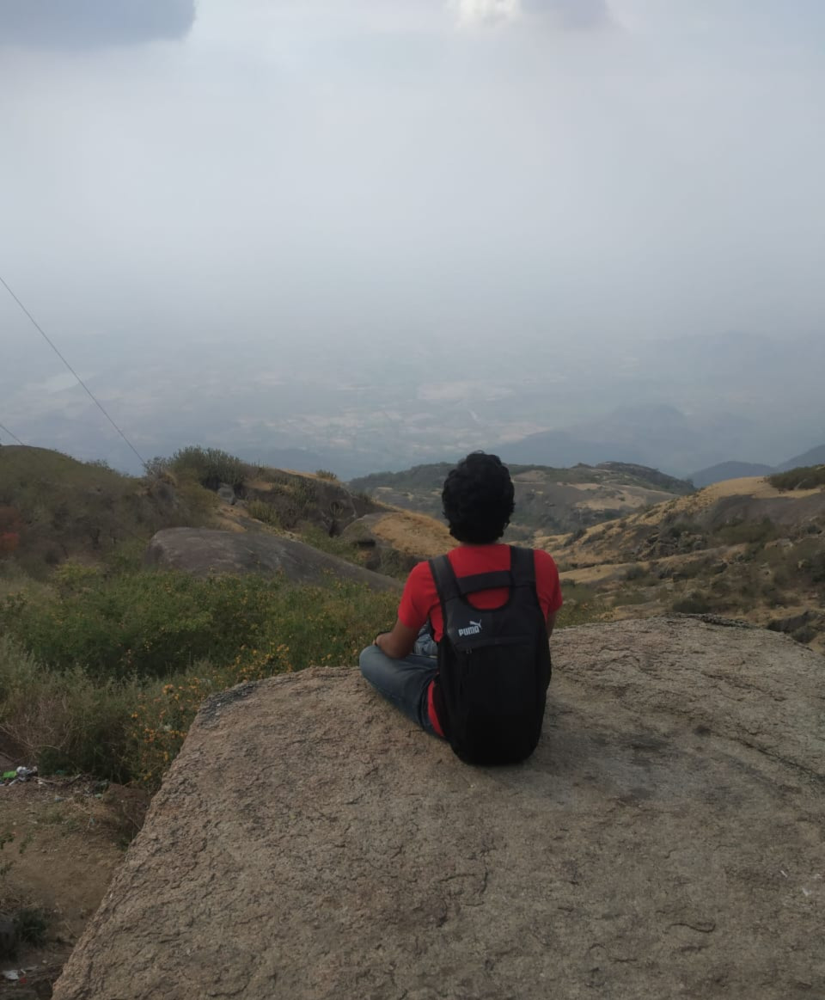
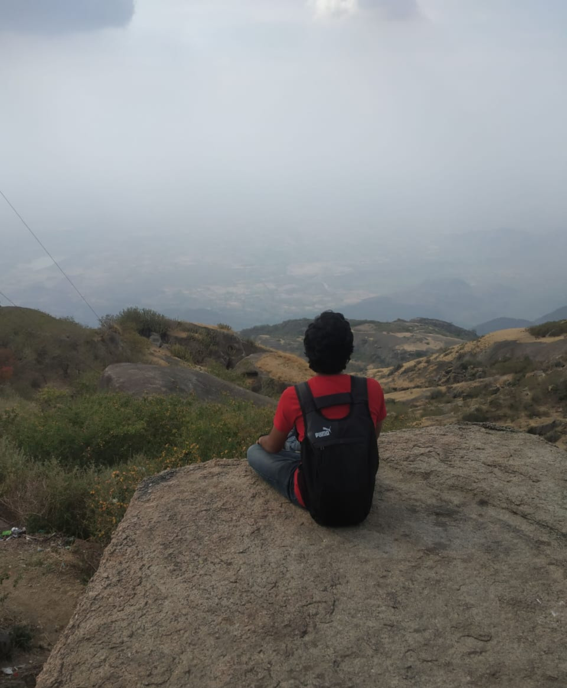
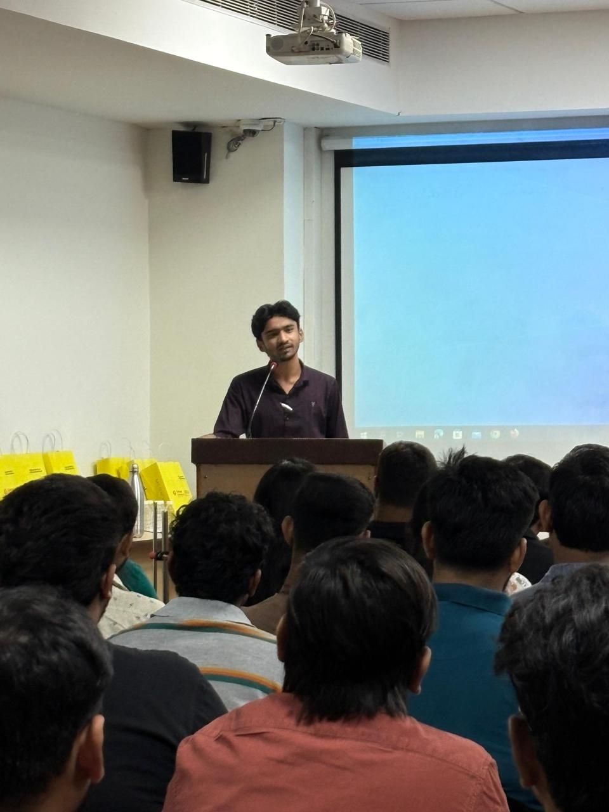
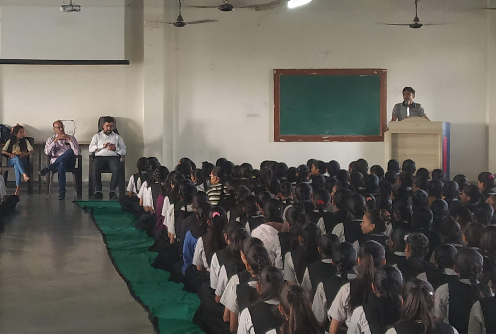
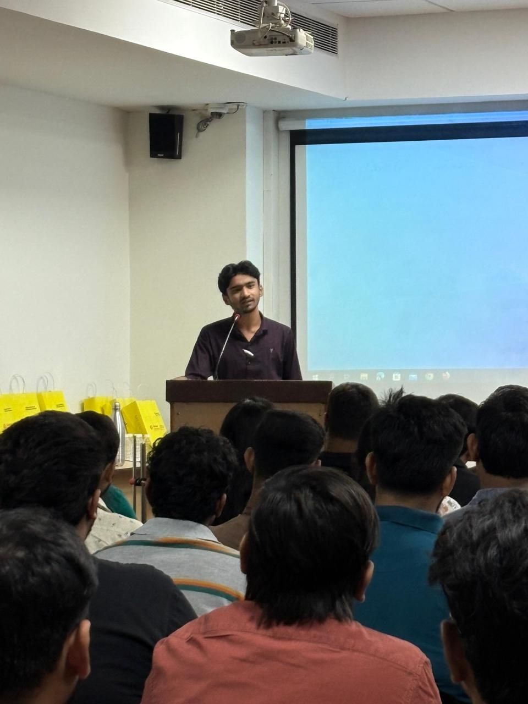
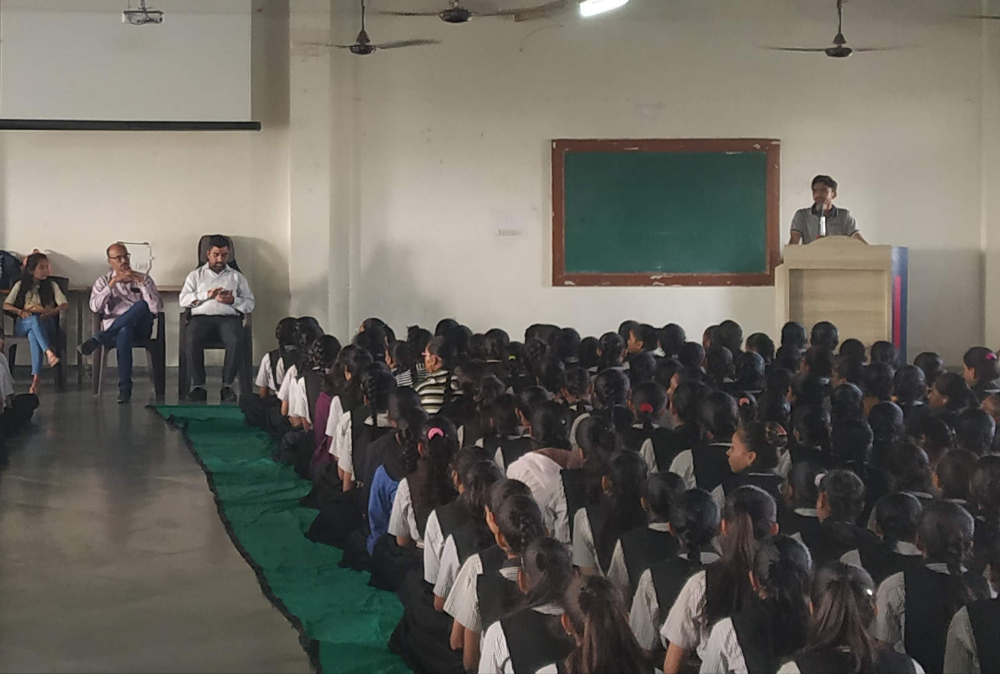

The Origin
I’m Hasan Malek — a Security Engineer, Researcher, and Cybercrime Investigator. I didn’t come from a fancy degree or a rich educational background. I came from raw curiosity, broken systems, cheap hardware, sleepless nights, and an obsession to understand how everything works underneath.
While most people study cybersecurity, I dissected it. While most follow tutorials, I followed my anger, my curiosity, my hunger. And it brought me exactly where it needed to.
The Cybercrime Chapters
I work where things get serious — inside real investigations, real scams, real victims, real criminals, and real consequences. Cybercrime isn't a classroom problem. It’s a battlefield. And I’ve been in the middle of it.
From tracing scammers across states to breaking malware disguised inside “innocent apps,” from real-time raids to high-stakes digital forensics… I learned the kind of things reality never writes in textbooks.
The Path of Obsession
I’m a school dropout. Not a failure — just someone who understood early that structured education moves slower than the speed of my curiosity.
I spent years learning the hard way — patching broken code at 3 A.M., reverse engineering apps I wasn’t supposed to open, and building tools nobody asked me to build.
My growth isn’t traditional… It’s engineered from scratch — by me.
My Journey in Frames

 



 



The Chaos Layer — The Part Schools Can’t Teach You
Genius isn’t cute. Curiosity isn’t polite. Creation isn’t peaceful.

There is a side of me that does not fit into formal bios. The side that breaks things first, understands them next, and perfects them last. The side that doesn’t follow rules — it studies them, bends them, weaponizes them, and re-writes them.
That is the part of me that built my mind. And it’s staying.

The Human Behind the Terminal
I am not perfect. I am not calm. I am not what you expect a “cybersecurity expert” to look like. I’m real. And reality is messy.
I’m a mixture of discipline and chaos, intelligence and impulse, silence and madness. And that’s exactly what fuels my work.